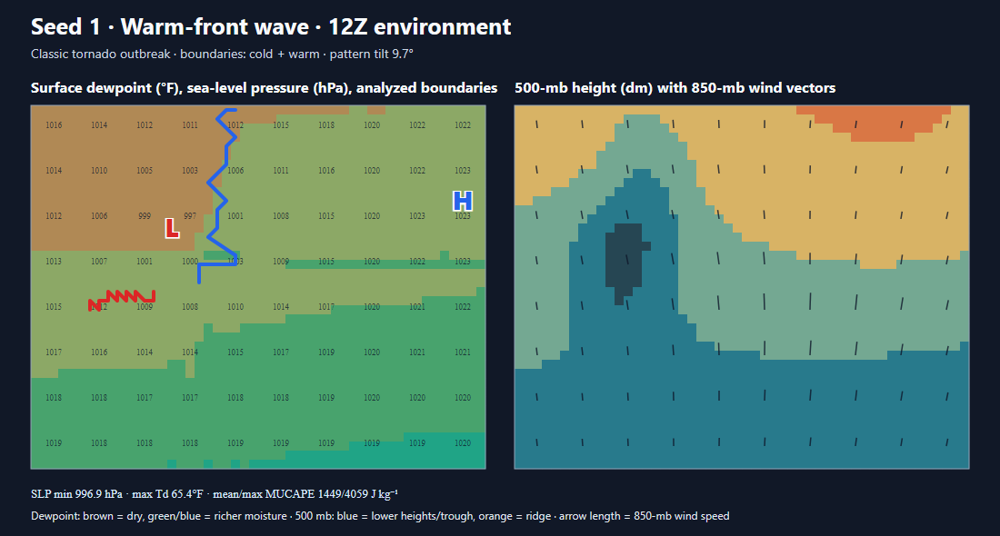
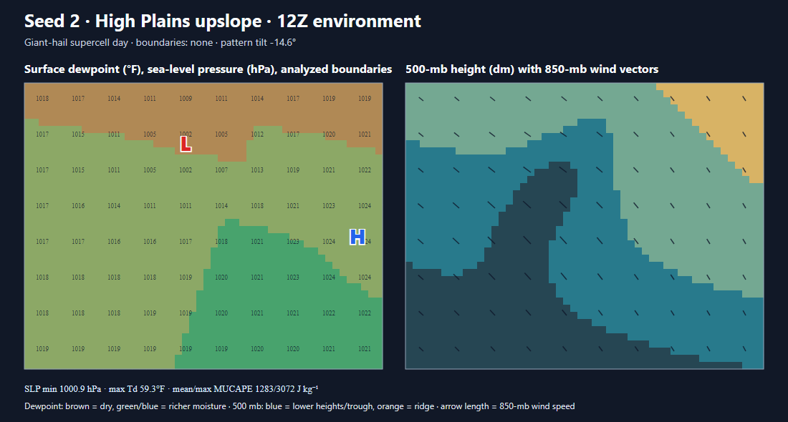
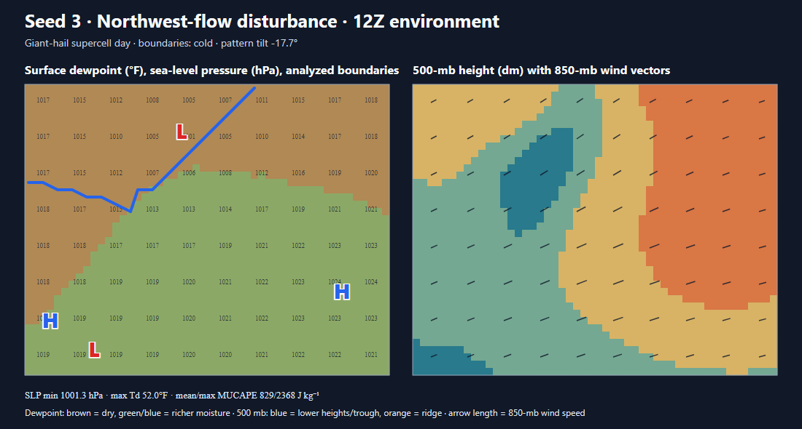
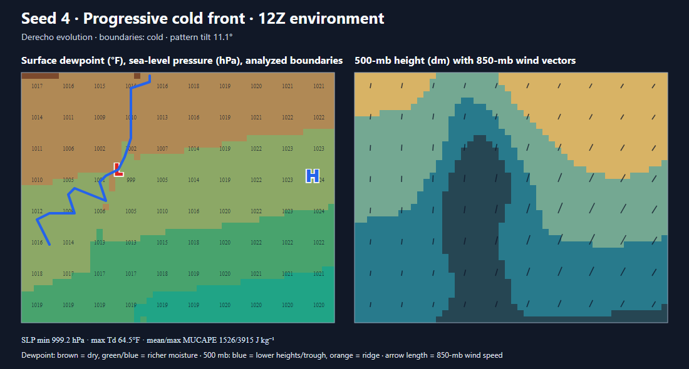
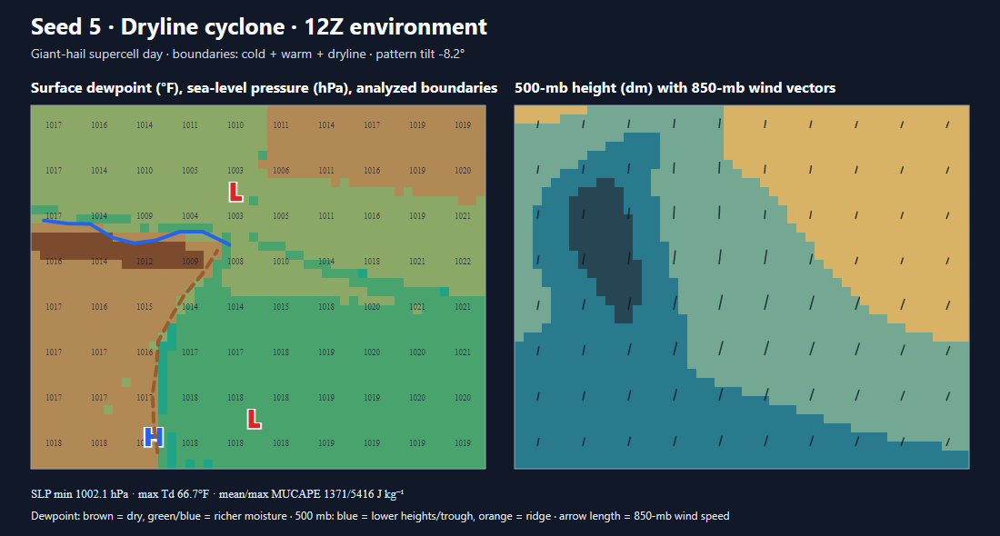
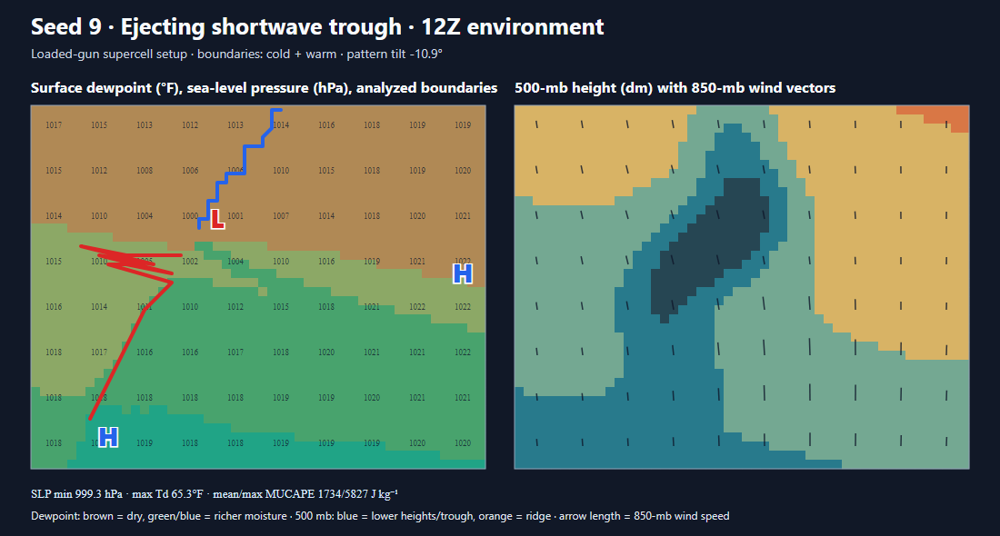
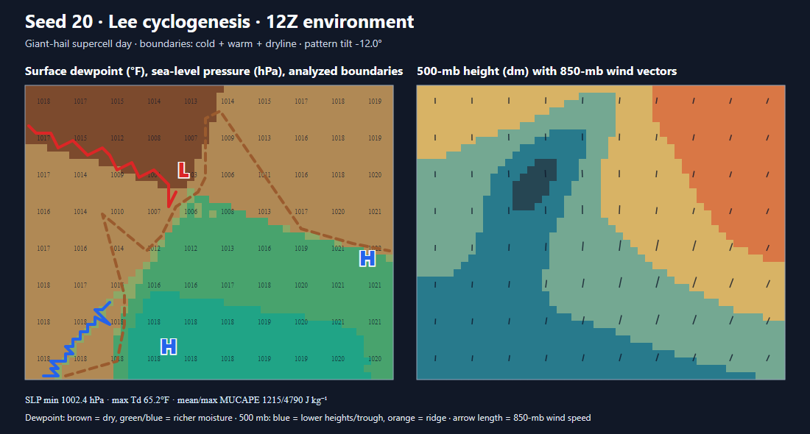
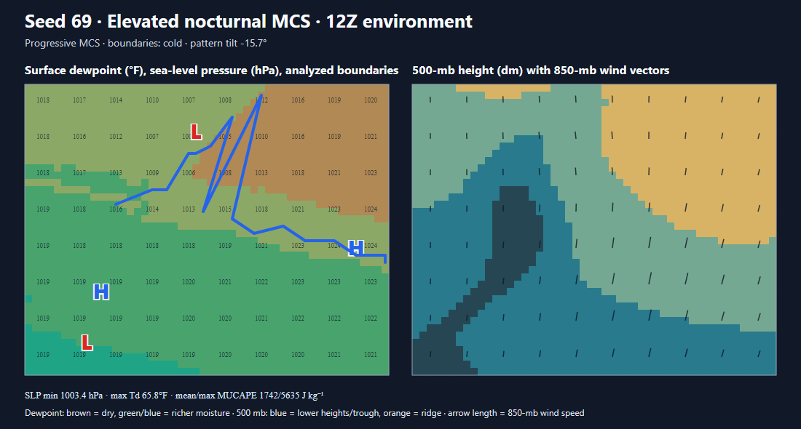

Model-derived 12Z setup environments
Surface dewpoint, pressure and boundaries at left; 500-mb height and 850-mb wind vectors at right.

Seed 1 · Warm-front wave

Seed 2 · High Plains upslope

Seed 3 · Northwest flow

Seed 4 · Progressive cold front

Seed 5 · Dryline cyclone

Seed 9 · Shortwave ejection

Seed 20 · Lee cyclogenesis

Seed 69 · Elevated nocturnal MCS